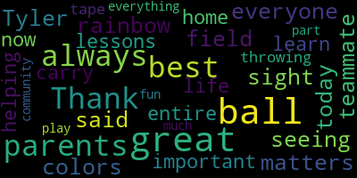
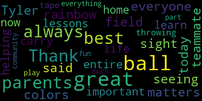

total time: 2.18 minutes
total words: 373

total time: 0.46 minutes
total words: 101

[SPEAKER_03]: What team is this?
[Unidentified]: You guys any good?
[SPEAKER_03]: Are you any good?
[Unidentified]: Yeah.
[SPEAKER_03]: Are you going to hit a home run this year?
[SPEAKER_04]: What is it? The Mariners. Are you on the Mariners? Yeah. Are you on the Mariners?
[SPEAKER_11]: You're on the Dodgers? You're going to have a good team coach?
[SPEAKER_03]: I think so. We have a good time either way. Did you recruit? Did you do scouting? Oh yeah, heavy duty scouting.
[SPEAKER_08]: Those are the faces.
[SPEAKER_11]: The judges are right here, the majors. All right, let's get these cubs together. Come on, man.
[O'Keefe]: We're doing a parade for Medford Little League. One of our fans here. Say hi. Hi. Get out of here Yankees!
[SPEAKER_08]: Very exciting day for the City of Medford. We have the opening day of Little League here. It's a beautiful day as you can see there's thousands of little kids out here from the City of Medford enjoying a fun-filled packed day with their parents. Say the Blue Jays! Blue Jays!
[SPEAKER_04]: Go Mariners!
[O'Keefe]: okay
[SPEAKER_02]: The Yankees still traveling here. How you doing? Cut the Yankees off.
[Unidentified]: You trying to steal my wife Christian? You got a smile!
[SPEAKER_08]: Good job, guys. All right, here we go.
[Unidentified]: Wave for the camera.
[SPEAKER_11]: Let's go, let's go. I guess his daddy had to take him. Maybe they had something to go to.
[Unidentified]: What channel is it on? Channel 3 in Medford! Channel 3 TV! Okay, I'll go check it out.
[SPEAKER_04]: Hydrate. Say hydrate. Hydrate.
[Unidentified]: Hydrate. Hydrate, y'all.
[SPEAKER_04]: Mets.
[Unidentified]: Say go Mets.
[Unidentified]: Yeah! 100!
[SPEAKER_11]: They play ball guys.
[SPEAKER_09]: Who's the big papa of your team?
[SPEAKER_04]: Go Cardinals! Go Cardinals! Go Cardinals!
[Unidentified]: What's it like coaching Little League?
[SPEAKER_04]: It's living the dream.
[Unidentified]: It's what I was born to do.
[SPEAKER_01]: These are the heavy hitters right here.
[SPEAKER_03]: Batting clean up. The Giants ready?
[SPEAKER_12]: This is like 12 and 11's. Triple A is 11 and 10. Double A is 8 and 9. That's a couple shuffles. And then what happens after they get out of Little League? A lot of kids play Babe Ruth or AAU baseball.
[SPEAKER_11]: Go A's! Go A's! What's the first letter of the alphabet? All right, we do our duty.
[SPEAKER_03]: Isn't this exciting? Absolutely.
[Unidentified]: Opening day. It's the best.
[SPEAKER_04]: John, how many kids do you have in the program? I have one this year. What team?
[Unidentified]: The Orioles.
[SPEAKER_04]: Orioles. Go Orioles.
[SPEAKER_06]: Go Orioles.
[SPEAKER_03]: Mom.
[SPEAKER_06]: Oh, me mom.
[SPEAKER_03]: What are you holding? What are you holding? This is called a hockey stick. And?
[SPEAKER_06]: Because my hockey child plays baseball too.
[Unidentified]: You're going to go on YouTube if you wave. Wave, you'll get on YouTube.
[SPEAKER_11]: Give me another one. Can I give you one? How about two? Say hi. That's right, they like to play in the dirt where it's nice and wet.
[Unidentified]: What we're going to look to do is we're going to have a quick national anthem.
[O'Keefe]: So they're nice enough to come and sing the national anthem for us. So what we're looking to do is just give them the opportunity to sing, and then we'll have an opening day ceremony. Thank you.
[SPEAKER_09]: Oh, say can you see by the dawn's early light What so proudly we hailed at the twilight's last gleaming? Whose broad stripes and bright stars through the perilous fight O'er the ramparts we watched were so gallantly streaming? And the rocket's red glare, the bombs bursting in air, Gave proof through the night that our flag was still there. Oh, say does that star-spangled banner yet wave O'er the land of the free and the home of the brave?
[O'Keefe]: Come over and basically speak the pledge for Method Little League.
[SPEAKER_01]: I love its country. I respect its laws. I will play fair and strive to win. But win or lose, I will always do my best.
[O'Keefe]: Nice job. Nice job. Nice job. Nice job. And what we also do, too, is we have a coach's pledge. It was something that we put in back in 2013. I was going to have Joe Salera read it, so I'm going to bring him out right now and have him read it. So, Joe, why don't you come out and read this? I know, Joe. Great fun. We love that.
[_Zabvvh8vxM_SPEAKER_03]: Medford Little League culture. Louder. One, coaching is always a privilege. We are coaching for life, not for one game or one season. I am coaching the top of the batting order, the bottom of the batting order, and the bench. Every player should spend time on each. I will keep the great game fun for all players. This is Little League, and these are young people that will have an impact on good or bad. I am responsible for the team and league cultures. I will coach the way I would want my child coached if I was watching from the stands. I will emphasize effort, learning, and improving, and bouncing back from mistakes. These are all things in the player's control. By focusing on these things, we reduce anxiety, increase confidence. Contrast these with focusing on results, compassion to others, or the mistakes are not okay. These are all out of the players' control. I will set a culture of respect for rules, opponents, officials, teammates, and self-roots. I will look for teachable moments. I will keep my players emotionally, emotional tanks filled, look for opportunities to give truthful, specific encouragement, expressing appreciation, listening, exhibiting positive body language. Contrast to criticizing, correcting, sarcasm, ignoring, ex-a-bigot, ex-a-visiting, negative body language. Note points 8, 9, and 10 are adapted from Positive Coaching Alliance materials.
[O'Keefe]: Tufts University and the Positive Coaching Alliance, we work with them pretty closely in terms of training the coaches for just basically working with kids and just making sure they have access and opportunities to positive reinforcements. So that's one of the opportunities that we're trying to provide as a community for the kids in MedFed and the MedFed Little League program. And what I'd like to do is just provide this opportunity for Mayor Burke to come up and just have to say a couple of words. We've been partnering with her with the Community Preservation Act in order to do some reservations, some recreation programs. So I'll just give her an opportunity to say hello.
[Burke]: Thank you everyone for being here today. It's a great sight out there seeing this rainbow of colors in our field. And as Tyler said, always do your best. That's all that matters. Always just do the best you can and be a great teammate because it's so important. You learn these lessons now and they carry through your entire life. So to all the parents that are helping out and the parents that are at home throwing balls and tape balls and everything else, thank you so much for being a part of this great community. Have fun, play ball!
[O'Keefe]: So what we're going to do now is we're going to ask the kids to come up with their gloves. We're going to ask, we have City Council Michael Mox, City Council John Falco, and we have Mia Mustone, who's also a coach. Congratulations, Mia, for stepping up. Johnny's been a coach. Michael Mox has been a coach in this program. So it's been a great opportunity. So we have Mayor Burke and the rest of the elected officials. We'll have you step out in the mound here. The count of three, take your time. All right, one at a time. We'll do one at a time. Maya Firth will go first.
[SPEAKER_02]: Put your glove up. Put your glove up.
[Unidentified]: Michael Ma.
[SPEAKER_11]: Nice job, nice job.
[O'Keefe]: Hey John Tucker.
[Unidentified]: Nice job, nice job.
[SPEAKER_03]: He saved your skin John, he saved your skin.
[SPEAKER_11]: Nice job, nice job!
|
total time: 2.18 minutes total words: 373 |
total time: 0.46 minutes total words: 101  |
||
{kind=link}